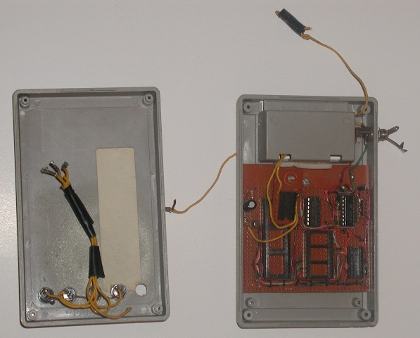

This is an 1802 based telephone dialer. The Q line drives a relay via a transistor circuit. The relay generates dial pulses. Telephone numbers are input via push button switches connected to the EF lines. Needless to say this system is no longer functional.
